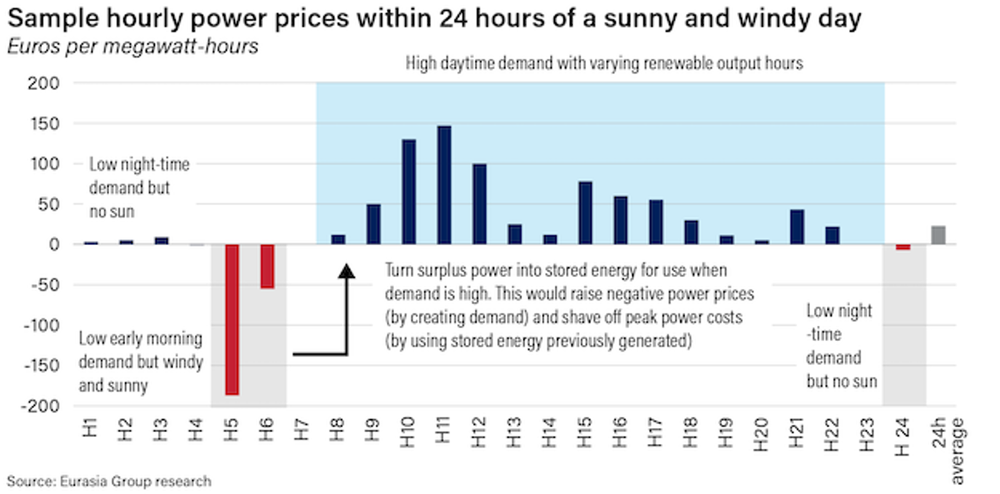

|
 |
|||
|
||||
|
||
This is an AI-generated summary based on the call transcript. A full transcript, audio, and video from this call are available. You can access other Eurasia Group conference calls through a personalized link for select podcast readers here. Speakers:
The Near-Term Crunch: A Tight Winter Ahead Qatar's Ras Laffan LNG complex remains offline following damage during the Iran conflict. Two restart attempts have failed. Speakers do not expect Qatari LNG supply to return in time to materially support European gas inventories for the 2026–2027 winter; early 2027 is the earliest plausible resumption if conditions improve quickly. European storage is uneven. Italy is well-stocked at roughly 70% capacity. Germany, at ~45%, is the most exposed major economy and is unlikely to reach the mandatory 80% fill level by 1 November — or even 70–75% at best. The Netherlands, Belgium, and the UK are also low, with the UK carrying both low volumes and low storage capacity. Germany's buffer is approximately 6.5 GW of coal-fired capacity that could be reactivated; speakers do not expect outright gas shortages but characterize the winter as tight. Why Two Crises in Five Years Point Toward Electrification This is the second geopolitical supply shock within five years — Russia's full-scale invasion of Ukraine in 2022 was the first. In both cases, global oil and gas markets were oversupplied at the onset, yet price spikes occurred anyway. The structural lesson, which speakers say policymakers and executives are now internalizing, is that an abundance of global supply does not protect import-dependent economies from choke-point disruptions. The Strait of Hormuz is the most significant such choke point. The Price Decline Thesis: 305 GW by 2030 Europe's natural gas-fired generation sets the marginal wholesale power price on most days. On a high-demand, low-wind day in Germany (e.g., 10 June), the marginal price reached €215/MWh. On a high-renewable day, five days later, prices went negative.  Negative-price hours have increased every year since 2022 and are forecast to rise sharply again in 2026. Speakers interpret this as a strong investment signal for battery electric storage systems (BESS). Current large-scale batteries operate at 4–8 hours; systems with 10–12-hour capacity are expected by approximately 2028, which would largely resolve solar day/night intermittency. Between 2026 and 2030, Eurasia Group estimates a net capacity addition of 305 GW across the EU. Germany leads in absolute terms, with large solar, wind, and BESS additions, partially offset by coal retirements. Germany's year-ahead baseload price is currently ~€100/MWh; the forward curve implies €75–80/MWh by 2028. One speaker characterized that forward curve as "a little bit overvalued" and expects German prices to converge toward French levels during spring, summer, and autumn — though not fall below them, given France's lower levelized cost of electricity (LCOE) for existing nuclear of approximately €60–65/MWh. At €70–75/MWh, speakers assess that most European energy-intensive industries would regain global cost competitiveness. Retail prices are not expected to fall — grid access fees and subsidies financing the buildout are passed through to consumers. Country Divergence: Winners, Laggards, and Structural Risks
Nuclear: SMRs Yes, Conventional New Builds No (Before 2030) No conventional new nuclear capacity will come online in Europe before 2030 — Hinkley Point C, Polish plans, and new French units all fall outside this window. Small modular reactors (SMRs) are under active development across multiple countries; one speaker expects commercial SMRs online before 2030, citing a Rolls-Royce unit under construction in Wales. SMRs will add incremental firm capacity but will not be deployed at scale within the forecast horizon. One speaker described himself as "bullish on SMRs and bearish on conventional new nuclear" in Europe. Data Centers: Inference Stays, Training Leaves Speakers segmented European data center demand into three categories: inference (latency-sensitive, must be within ~250 km of users), sovereign cloud (regulation-bound), and AI training (not latency-sensitive). Inference and sovereign cloud show strong growth outlooks in Europe. AI training is expected to continue migrating to the US, where costs are lower, absent European regulation requiring domestic training, which is not anticipated. Time-to-grid-connection is the binding constraint, not power prices. Priority growth regions cited: the Nordics (cheap power, space, heat reuse infrastructure), Iberia (particularly Zaragoza), northern/western France (offshore wind proximity, sovereign AI strategy), and parts of Germany north of Frankfurt (18-month connection times vs. a decade in southern Germany). West London connections are severely constrained. Italy was flagged as a near-term avoid despite major grid investment underway by utility Terna. The EU's target of tripling data center capacity in seven years was characterized as a "tall order"; 2.5x was described as "fairly reasonable." Key Watch Items
What Clients Are Asking Battery economics under falling spreads: A client asked whether tightening price spreads will continue to incentivize BESS investment. Speakers acknowledged the tension: as BESS deployment compresses volatility, the spread that makes storage profitable shrinks. The likely policy response — contracts for difference (CfDs) and power purchase agreements (PPAs) guaranteeing fixed revenues — would sustain investment signals but at the cost of wholesale market liquidity. UK vs. EU competitive positioning: The discussion surfaced a nuanced view — the UK is likely to meet its 2030 clean power targets and achieve broadly competitive prices, but will not outperform the EU leaders. The current environment is described as "not ideal," and the UK's low storage capacity amplifies near-term vulnerability. Italy's catch-up potential: The question of whether Italy's investment pipeline can translate into actual deployed capacity was raised. Speakers were cautiously optimistic about investment flow but flagged Italy's historical difficulty converting capital into completed projects as the key execution risk. Nuclear as a model: Clients probed whether other countries would replicate France's nuclear advantage. Speakers were skeptical of conventional new builds at scale before 2030, given cost and construction timelines, but more optimistic on SMRs as a post-2030 complement to renewables. Data center demand as a price floor: The discussion touched on whether rising electrification demand — including data centers, EVs, and heat pumps — would offset the price-reducing effect of new generation capacity. Speakers acknowledged this dynamic and suggested it would eventually require another round of investment, supporting a longer-term price floor. Please note that while this AI-generated summary has been checked for accuracy against the source material, it may not capture every nuance or qualifier from the discussion. The full transcript or audio should be consulted for complete context. |